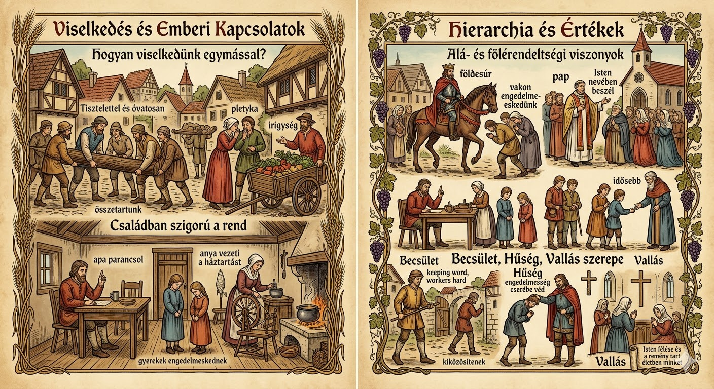

Fontos fogalmak

Jobbágy: Személyesen nem teljesen szabad paraszt, aki a földesúr birtokán él, robotot végez és adót fizet cserébe földhasználatért.
Robot: Kötelező ingyenmunka a földesúr majorságán (heti 1–2 nap + extra aratáskor vagy más időszakban).
Tized: A termés tizedrésze (1/10), amit az egyháznak kell leadni.
Kilenced: A termés kilencedrésze (1/9), amit a földesúrnak adnak.
Cenzus: Éves fix járadék (pénzben vagy terményben), amit a jobbágy fizet a földesúrnak.
Majorság: A földesúr saját nagy gazdasága, ahol a jobbágyok robotolnak.
Úrbér: A földesúr és jobbágy viszonyát szabályozó szerződés (pl. robot mértéke).
Zsellér: Föld nélküli vagy nagyon kevés földdel rendelkező jobbágy, aki napszámban dolgozik másoknál.